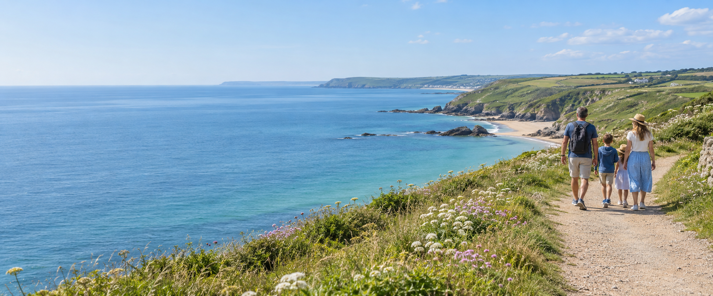
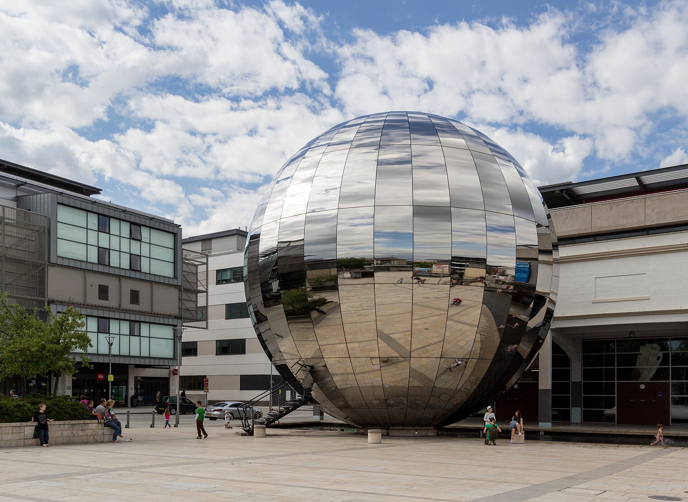

Parks and Walks
Woodland wanders, open parkland and seaside picnics for a day together.
Explore places
Bristol · Clevedon · North Somerset
Little adventures for every kind of family day.
Find your next day outWoodland wanders, open parkland and seaside picnics for a day together.
Explore places
Explore local stories, historic houses and remarkable aircraft at family-friendly museums.
Explore places
Science, sea life, swimming and cinema: find an indoor adventure to suit your family.
Explore places